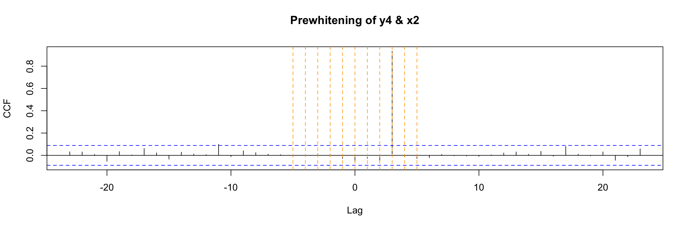

library(MLTools)
library(fpp2)
library(ggplot2)
library(readxl)
library(lmtest)
library(tseries)
library(tidyverse)
library(TSstudio)
library(astsa)
library(TSA)
library(Hmisc) # for computing lagged variablesLab. 7 Dynamic regression models
Preliminaries
Set working directory
setwd(dirname(rstudioapi::getActiveDocumentContext()$path))Transfer Function Examples
We will generate some examples following Pankratz’s formulation of dynamic regression models: \[y[t] = c + \dfrac{\omega(B)}{\delta(B)} x[t - b] + v(t)\] where \(y\) is the output variable, \(x\) is the input and \(v\) is the autocorrelated ARMA noise.
First example
For the first example let the input variable x1 be white noise.
Generate random explanatory variable
set.seed(2024)
N <- 500
x1 <- rnorm(N)
x1 <- ts(x1)ggtsdisplay(x1, lag.max = 100, main = "x1", plot.type = "histogram")We also simulate the ARMA noise \(v(t)\). (try to simulate 10 * N samples and compare ACF).
set.seed(100)
ar_noise <- arima.sim(n = N,
list(ar = c(0.8)),
sd = sqrt(0.25))
ggtsdisplay(ar_noise,lag.max = 100, main = "ARMA noise")Exercise: are the ACF and PACF what you expected?
Next we generate the output \(y1\) following a very simple example of Pankratz’s model:
y1 <- 0.7 * x1 + ar_noiseExercise:
- What is \(\omega(B)\) here, what is its degree \(s\)?
- What is \(\delta(B)\) here, what is its degree \(r\)?
- What is the lag \(b\)? What about \(c\)?
Next we create a multidimensional time series with these variables: input, output and noise
fdata1 <- cbind(x1, y1, n=ar_noise)
head(fdata1)Time Series:
Start = 1
End = 6
Frequency = 1
x1 y1 n
1 0.9819694 0.02059515 -0.6667834
2 0.4687150 -0.08178823 -0.4098888
3 -0.1079713 -0.44904772 -0.3734678
4 -0.2128782 0.43089886 0.5799136
5 1.1580985 1.20563498 0.3949661
6 1.2923548 1.16502449 0.2603761Cross-correlation function
In order to explore the correlation between one time series y and the lags of another time series x we can use this cross correlation function ccf(y, x). For example, the first lag of the time series x1 is (trivially) perfectly correlated with x1. Let us explore this with ccf:
x1_lag1 <- Lag(x1, shift = 1)This Lag function (from Hmisc) is different from the lag function (from stats) that we have used in previous sessions. It keeps the origin of the time series but fills the lagged positions with NAs.
head(x1_lag1)Time Series:
Start = 1
End = 6
Frequency = 1
[1] NA 0.9819694 0.4687150 -0.1079713 -0.2128782 1.1580985We fill that missing value with zero.
x1_lag1[is.na(x1_lag1)] <- 0Exercise: Look at the value of Start in the previous output. Now run
stats::lag(x1) and compare the output.
head(stats::lag(x1, n = 1))Time Series:
Start = 0
End = 5
Frequency = 1
[1] 0.9819694 0.4687150 -0.1079713 -0.2128782 1.1580985 1.2923548Now we can plot the ccf values. We use abline to add some red dashed lines to help you identify the first lags (on both sides of zero)
ccf(y = x1, x = x1_lag1)
abline(v = -5:5, col="orange", lty = 2)Alternatively, you can use this (without setting the NAs to 0)
ccf(y = x1, x = Lag(x1, shift = 1), na.action = na.pass)
abline(v = -5:5, col="orange", lty = 2)Either way, the ccf plot shows that (as expected) x1(t) has cross correlation equal to 1 with its lag x1(t - 1).
Notes about ccf:
- In general the lag k value returned by
ccf(x, y)estimates the correlation betweenx[t+k]andy[t]. When you apply it to the lag of x1, that is wheny[t] = x1[t]andx[t] = x1[t - 1]then the value k units to the right shows the correlation betweenx1[t - 1 + k]andx1[t]. In this example, where x1 is white noise the ony non-zero value occurs at k = 1. - You can use
print(ccf(...))to see the numeric values of the ccf
If we use ccf to explore the cross correlation between the output and input of this example we get a clear indication that they are correlated for t = 0. This is a consequence of the equation model, but the (lack of) autocorrelation of x1 also plays a role here.
ccf(y = y1, x = x1)
abline(v = -5:5, col="orange", lty = 2)Classical linear regression model
If we try to study the relation of x1 and y1 with a classical (non dynamic) linear regression model:
lm1.fit <- lm(y1 ~ x1 - 1, data = fdata1 )
summary(lm1.fit)
Call:
lm(formula = y1 ~ x1 - 1, data = fdata1)
Residuals:
Min 1Q Median 3Q Max
-2.32756 -0.60451 -0.01213 0.42890 1.68936
Coefficients:
Estimate Std. Error t value Pr(>|t|)
x1 0.65637 0.03441 19.07 <2e-16 ***
---
Signif. codes: 0 '***' 0.001 '**' 0.01 '*' 0.05 '.' 0.1 ' ' 1
Residual standard error: 0.7478 on 499 degrees of freedom
Multiple R-squared: 0.4216, Adjusted R-squared: 0.4205
F-statistic: 363.8 on 1 and 499 DF, p-value: < 2.2e-16You can see that even though the model coefficient is significant, the residuals of the model do not look like white noise:
CheckResiduals.ICAI(lm1.fit, lag=100)
Breusch-Godfrey test for serial correlation of order up to 100
data: Residuals
LM test = 306.02, df = 100, p-value < 2.2e-16Therefore this model fails to extract all the information about y1. However, in this example there is no cross correlation between the residuals of the model and x1 (recall x1 is white noise, so it has no autocorrelation).
ccf(y = residuals(lm1.fit), x = x1)
abline(v = -5:5, col="orange", lty = 2)Transfer function model
Let us return to the Pankratz’s transfer function model connecting x1, y1 and the ARMA noise. In order to fit this type of model we again use an arima function, but this one belongs to the TSA library:
arima1.fit <- TSA::arima(y1,
order=c(1,0,0),
#seasonal = list(order=c(0,0,0),period=24),
xtransf = x1, # input variable(s)
transfer = list(c(0,0)), # values of r and s
include.mean = FALSE,
method="ML")Note the xtransf and transfer arguments. We will use this arguments of the function to describe the components of the Pankratz’s formulation of this model. Do not worry if you do not understand this function right away, we will see the details in coming examples.
The diagnosis of these models shares some aspects of the SARIMA model diagnosis we have discussed.
We begin by examining the summary of training errors and the significance of the estimated coefficients
summary(arima1.fit)
Call:
TSA::arima(x = y1, order = c(1, 0, 0), include.mean = FALSE, method = "ML",
xtransf = x1, transfer = list(c(0, 0)))
Coefficients:
ar1 T1-MA0
0.7330 0.6982
s.e. 0.0304 0.0187
sigma^2 estimated as 0.2589: log likelihood = -372.01, aic = 748.02
Training set error measures:
ME RMSE MAE MPE MAPE MASE
Training set -0.02265786 0.5088067 0.3977492 159.3794 325.3977 0.4486936
ACF1
Training set -0.01465217coeftest(arima1.fit)
z test of coefficients:
Estimate Std. Error z value Pr(>|z|)
ar1 0.732958 0.030377 24.129 < 2.2e-16 ***
T1-MA0 0.698220 0.018653 37.432 < 2.2e-16 ***
---
Signif. codes: 0 '***' 0.001 '**' 0.01 '*' 0.05 '.' 0.1 ' ' 1Note that the table now includes information about the coefficients of the transfer function: T1-MA0 here.
Next we check if the residuals look like white noise
CheckResiduals.ICAI(arima1.fit, lag=100)
Ljung-Box test
data: Residuals from ARIMA(1,0,0) with zero mean
Q* = 102.24, df = 98, p-value = 0.3647
Model df: 2. Total lags used: 100Notice that they do, in contrast with the classical linear model.
Finally, there is a new step in the diagnosis of the model: the ccf of the input with the residuals. If the model is well fitted there should be no cross correlation left (as in this case).
ccf(y = residuals(arima1.fit), x = x1)
abline(v = -5:5, col="orange", lty = 2)Second example
For our second example we will keep the ARMA noise term, but we will consider an input time series with autocorrelation, as illustrated by the ACF plot below:
x2 <- read.table("TEMP.dat", sep = "", header = TRUE)
x2 <- ts(x2$TEMP)
ggtsdisplay(x2,lag.max = 100, main = "x2")We create the output variable y2 as before.
y2 <- 0.7 * x2 + ar_noiseExercise: Ask yourself the same questions as in the previous example. That is , think about \(\omega(B)\) and its degree \(s\), about \(\delta(B)\) and its degree \(r\) and also about the lag \(b\).
We again create a multidimensional time series with these variables.
fdata2 <- cbind(x2, y2, n=ar_noise)
head(fdata2)Time Series:
Start = 1
End = 6
Frequency = 1
x2 y2 n
1 9.6 6.053217 -0.6667834
2 7.0 4.490111 -0.4098888
3 8.8 5.786532 -0.3734678
4 8.6 6.599914 0.5799136
5 7.4 5.574966 0.3949661
6 8.8 6.420376 0.2603761Cross-correlation function
If we examine the ccf between the input x2 and the output we get a much more complicated picture:
ccf(y = y2, x = x2)
abline(v = -5:5, col="orange", lty = 2)Exercise: Why? What is different in this example?
Classical linear regression model
And if we apply a classical linear regression
lm2.fit <- lm(y2 ~ x2 - 1, data = fdata2 )
summary(lm2.fit)
Call:
lm(formula = y2 ~ x2 - 1, data = fdata2)
Residuals:
Min 1Q Median 3Q Max
-2.2700 -0.5594 0.0352 0.4707 1.7267
Coefficients:
Estimate Std. Error t value Pr(>|t|)
x2 0.695501 0.002453 283.5 <2e-16 ***
---
Signif. codes: 0 '***' 0.001 '**' 0.01 '*' 0.05 '.' 0.1 ' ' 1
Residual standard error: 0.7465 on 499 degrees of freedom
Multiple R-squared: 0.9938, Adjusted R-squared: 0.9938
F-statistic: 8.037e+04 on 1 and 499 DF, p-value: < 2.2e-16Then the residuals still do not look as they should
CheckResiduals.ICAI(lm2.fit, lag=100)
Breusch-Godfrey test for serial correlation of order up to 100
data: Residuals
LM test = 306.98, df = 100, p-value < 2.2e-16But we have an additional problem. There is cross correlation between the residuals and the input:
ccf(y = residuals(lm2.fit), x = x2)
abline(v = -5:5, col="orange", lty = 2)Transfer function model
To address the shortcomings of classical linear regression we fit a transfer function model:
arima2.fit <- arima(y2,
order=c(1,0,0),
xtransf = x2,
transfer = list(c(0,0)), # values of r and s
include.mean = FALSE,
method="ML")
summary(arima2.fit) # summary of training errors and estimated coefficients
Call:
arima(x = y2, order = c(1, 0, 0), include.mean = FALSE, method = "ML", xtransf = x2,
transfer = list(c(0, 0)))
Coefficients:
ar1 T1-MA0
0.7313 0.6959
s.e. 0.0305 0.0054
sigma^2 estimated as 0.2586: log likelihood = -371.73, aic = 747.47
Training set error measures:
ME RMSE MAE MPE MAPE MASE
Training set -0.009103546 0.5085285 0.3976666 -6.492557 12.52274 0.297069
ACF1
Training set -0.01238152Again, do not worry if you do not understand all the details just yet.
Diagnosis
For the diagnosis we check the significance of the coefficients
coeftest(arima2.fit)
z test of coefficients:
Estimate Std. Error z value Pr(>|z|)
ar1 0.731318 0.030451 24.016 < 2.2e-16 ***
T1-MA0 0.695912 0.005441 127.901 < 2.2e-16 ***
---
Signif. codes: 0 '***' 0.001 '**' 0.01 '*' 0.05 '.' 0.1 ' ' 1We check if the residuals look like gaussian white noise (see the Ljung-Box test result)
CheckResiduals.ICAI(arima2.fit, lag=100)
Ljung-Box test
data: Residuals from ARIMA(1,0,0) with zero mean
Q* = 101.7, df = 98, p-value = 0.3788
Model df: 2. Total lags used: 100And finally we check the cross correlation between the residuals and the input.
ccf(y = residuals(arima2.fit), x = x2)
abline(v = -5:5, col="orange", lty = 2)As you can see, this model passes all our checks.
Exercise: Go back to the first example and check the code line defining the model to a new output:
y3 <- 70 * x1 + ar_noise
What changes do you expect in the model? Run the code and see what happens.
Third example
The third example will be very similar to the previous one, but our input will be a lagged version of the variable x2.
We obtain it using Lag and remove the initial NAs. Keep an eye on the resulting Start value of the time index:
x2lg3 <- na.omit(Lag(x2, 3))
head(x2lg3)Time Series:
Start = 4
End = 9
Frequency = 1
[1] 9.6 7.0 8.8 8.6 7.4 8.8To make sure that our time series do not contain missing values we will make them share that initial value with ts.intersect:
fdata4 <- ts.intersect(x2, x2lg3, ar_noise)We save the column names to restore them after we add the output column y4
nc4 <- ncol(fdata4)
cnames4 <- colnames(fdata4)
head(fdata4)Time Series:
Start = 4
End = 9
Frequency = 1
x2 x2lg3 ar_noise
4 8.6 9.6 0.57991358
5 7.4 7.0 0.39496606
6 8.8 8.8 0.26037610
7 7.4 8.6 -0.13670628
8 7.4 7.4 -0.22026214
9 7.0 8.8 -0.08475587And now we are ready to add the output.
fdata4 <- cbind(fdata4, y4 = 0.7 * fdata4[,"x2lg3"] + fdata4[,"ar_noise"])
head(fdata4)Time Series:
Start = 4
End = 9
Frequency = 1
fdata4.x2 fdata4.x2lg3 fdata4.ar_noise y4
4 8.6 9.6 0.57991358 7.299914
5 7.4 7.0 0.39496606 5.294966
6 8.8 8.8 0.26037610 6.420376
7 7.4 8.6 -0.13670628 5.883294
8 7.4 7.4 -0.22026214 4.959738
9 7.0 8.8 -0.08475587 6.075244and restore the variable names for the initial columns:
colnames(fdata4)[1:nc4] <- cnames4
head(fdata4)Time Series:
Start = 4
End = 9
Frequency = 1
x2 x2lg3 ar_noise y4
4 8.6 9.6 0.57991358 7.299914
5 7.4 7.0 0.39496606 5.294966
6 8.8 8.8 0.26037610 6.420376
7 7.4 8.6 -0.13670628 5.883294
8 7.4 7.4 -0.22026214 4.959738
9 7.0 8.8 -0.08475587 6.075244The preceding definition of y4 implies that the model we are using to generate this example is: \[ y_4[t] = \dfrac{\omega(B)}{\delta(B)} x_2[t - 3] + v(t) \] where \(v(t)\) is the same ARMA(1, 0) noise we have used in previous examples.
Warning: Keep in mind that in a real problem we would get the output \(y_4(t)\) and the input \(x_2(t)\), not its lagged version. And initially we would not know what particular lag b (such as 3 here) we should consider for x2[t - b].
Note also that for these examples we are keeping the functions \(\omega(B)\) and \(\delta(B)\) extremely simple. In later examples we will see how to deal with the general case.
In order to find what lag b we should use we can try several things. First, to simplify the code we will get shorted versions of the columns of the (multi)time series:
y4 <- fdata4[,"y4"]
x2 <- fdata4[,"x2"]
x2lg3 <- fdata4[,"x2lg3"]Cross-correlation function
Now, one of the first ways to look for b that you may consider is to look at the ccf between input and output:
ccf(y = y4, x = x2, lwd=2)
abline(v = -5:5, col="orange", lty = 2)In this very simple example we can still notice that b = 3 is special in a way. But in general, with more complicated \(\omega\) and \(\delta\) in the model, this plot will not be easy to interpret.
Transfer function model
An alternative and much better way to look for b is to consider a preliminary and very simple transfer function model that contains a high value of s (the degree of the transfer function numerator) and a low autoregressive order for the noise.
TF.fit <- TSA::arima(y4,
order=c(1, 0, 0),
#seasonal = list(order=c(1,0,0),period=24),
xtransf = x2,
transfer = list(c(0, 9)), #List with (r,s) orders
include.mean = TRUE,
method="ML")
summary(TF.fit)
Call:
TSA::arima(x = y4, order = c(1, 0, 0), include.mean = TRUE, method = "ML", xtransf = x2,
transfer = list(c(0, 9)))
Coefficients:
ar1 intercept T1-MA0 T1-MA1 T1-MA2 T1-MA3 T1-MA4 T1-MA5
0.7295 -0.2753 -0.0032 0.0011 -0.0137 0.7043 0.0144 -0.0021
s.e. 0.0310 0.2188 0.0106 0.0105 0.0103 0.0102 0.0101 0.0101
T1-MA6 T1-MA7 T1-MA8 T1-MA9
0.0153 0.0200 -0.0082 -0.0127
s.e. 0.0102 0.0103 0.0104 0.0106
sigma^2 estimated as 0.2556: log likelihood = -359.93, aic = 743.87
Training set error measures:
ME RMSE MAE MPE MAPE MASE
Training set -0.001966072 0.5055296 0.3975134 -0.6699472 6.62859 0.2930702
ACF1
Training set -0.01574397Now when we look at the statistical significance of the estimated coefficients of the model, the one corresponding to b stands out:
coeftest(TF.fit)
z test of coefficients:
Estimate Std. Error z value Pr(>|z|)
ar1 0.7295112 0.0310051 23.5287 < 2e-16 ***
intercept -0.2752544 0.2187961 -1.2580 0.20838
T1-MA0 -0.0031574 0.0105669 -0.2988 0.76509
T1-MA1 0.0011422 0.0104654 0.1091 0.91309
T1-MA2 -0.0137201 0.0102830 -1.3343 0.18212
T1-MA3 0.7043059 0.0101991 69.0558 < 2e-16 ***
T1-MA4 0.0143869 0.0100937 1.4253 0.15406
T1-MA5 -0.0021363 0.0100983 -0.2115 0.83246
T1-MA6 0.0152541 0.0101996 1.4956 0.13477
T1-MA7 0.0200410 0.0102836 1.9488 0.05131 .
T1-MA8 -0.0081691 0.0104483 -0.7819 0.43430
T1-MA9 -0.0127448 0.0105983 -1.2025 0.22915
---
Signif. codes: 0 '***' 0.001 '**' 0.01 '*' 0.05 '.' 0.1 ' ' 1In this example the analysis is easy because \(\omega(B)\) and \(\delta(B)\) are so simple. Later we will see how to use this model to find b even when the transfer function is more complicated. We will learn how to use an identification plot such as this:
TF.Identification.plot(x2, TF.fit) Estimate Std. Error z value Pr(>|z|)
T1-MA0 -0.003157393 0.01056693 -0.2987994 0.76509313
T1-MA1 0.001142155 0.01046541 0.1091362 0.91309444
T1-MA2 -0.013720118 0.01028296 -1.3342573 0.18211954
T1-MA3 0.704305876 0.01019909 69.0557694 0.00000000
T1-MA4 0.014386900 0.01009371 1.4253329 0.15406100
T1-MA5 -0.002136288 0.01009827 -0.2115500 0.83245816
T1-MA6 0.015254087 0.01019965 1.4955504 0.13477085
T1-MA7 0.020041034 0.01028355 1.9488435 0.05131411
T1-MA8 -0.008169055 0.01044830 -0.7818548 0.43429994
T1-MA9 -0.012744833 0.01059826 -1.2025400 0.22915438Even without understanding it completely, we can see that the value 3 stands out in this plot.
To check if differentiation is needed and to propose an ARMA structure for the noise term we will use a regression error plot like this one:
TF.RegressionError.plot(y4, x2, TF.fit, lag.max = 100)Warning: Removed 9 rows containing missing values or values outside the scale range
(`geom_point()`).We see a hint of a trend in this plot, so we will apply a regular difference (d = 1) when fitting the model. Also from the ACF and PACF we propose a (p, q) = (1, 0) ARMA structure.
NOTE: If this regression error is not stationary in variance,boxcox should be applied to input and output series.
After seeing this plot we are ready to fit a Transfer function model as in the previous examples (remember \(\omega, \delta\) are very simple and so r = s = 0). First we use the lagged version with b= 3 of x2 as input.
xlag = Lag(x2, 3) # b
xlag[is.na(xlag)]=0And now we fit the model:
arima.fit <- arima(y4,
order=c(1, 1, 0), # ARMA model for the noise
xtransf = xlag,
transfer = list(c(0, 0)), #List with (r,s) orders
include.mean = FALSE,
method="ML")
summary(arima.fit)
Call:
arima(x = y4, order = c(1, 1, 0), include.mean = FALSE, method = "ML", xtransf = xlag,
transfer = list(c(0, 0)))
Coefficients:
ar1 T1-MA0
-0.1630 0.6815
s.e. 0.0447 0.0120
sigma^2 estimated as 0.3835: log likelihood = -466.13, aic = 936.26
Training set error measures:
ME RMSE MAE MPE MAPE MASE
Training set -0.01487323 0.6186636 0.4422295 -0.8422924 7.487517 0.3260376
ACF1
Training set -0.006698721Diagnosis
The diagnosis begins by checking the statistical significance of the estimated coefficients (compare them with the values used to define y4)
coeftest(arima.fit)
z test of coefficients:
Estimate Std. Error z value Pr(>|z|)
ar1 -0.162972 0.044734 -3.6432 0.0002693 ***
T1-MA0 0.681467 0.011969 56.9375 < 2.2e-16 ***
---
Signif. codes: 0 '***' 0.001 '**' 0.01 '*' 0.05 '.' 0.1 ' ' 1Next we check if the residuals qualify as white noise:
CheckResiduals.ICAI(arima.fit, lag=25)
Ljung-Box test
data: Residuals from ARIMA(1,1,0)
Q* = 30.941, df = 23, p-value = 0.1242
Model df: 2. Total lags used: 25And finally we check that there is no cross correlation between the residuals and the input variable
res <- residuals(arima.fit)
res[is.na(res)] <- 0
ccf(y = res, x = x2)Prewhitening
We said before that directly examining the ccf of input vs output is not easy when the input is autocorrelated. Prewhitening is a technique that helps in such cases. where you want to examine the relationship between two time series without the distorting effect of autocorrelation. To perform prewhitening:
- Fit an ARIMA model to the input to remove its autocorrelations.
- Obtain the residuals (should behave like white noise).
- Apply the same model to the output series to get a transformed output.
Finally, we can compute the ccf of the transformed output and the residuals.
Fortunately there is a function in TSA that performs all this process for us and directly outputs the final ccf:
prewhiten(y4, x2, main="Prewhitening of y4 & x2")
abline(v = -5:5, col="orange", lty = 2)
The result is very clear in this example. You should compare this to the direct ccf that we already obtained before for this example:
ccf(y4, x2)
abline(v = -5:5, col="orange", lty = 2)